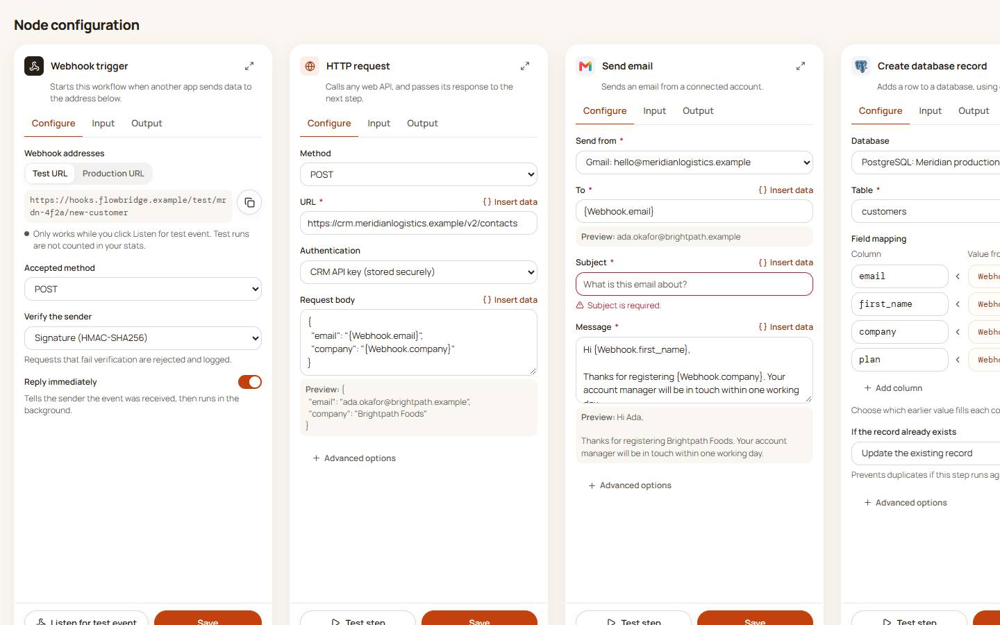
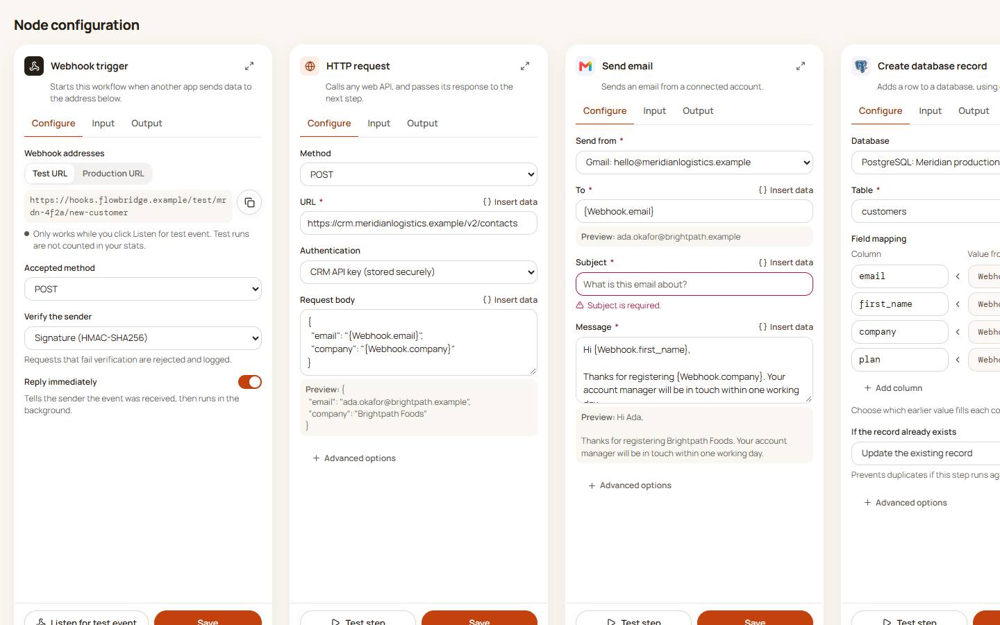

Colour clean-up: before and after
The same pages side by side. Only colours change; layout and wording stay the same. Select any screen to open it live.
- Error moves to a cooler crimson red →, so failures can't be mistaken for orange buttons.
- Warning moves to a yellower amber →, clearly apart from orange.
- Links and small labels become warm dark text with a subtle underline. Orange stays for buttons and the selected item.
- One light orange tint for selected and hover backgrounds, and data fields become neutral instead of rust.
Home


Overview


Executions


Execution details


Analytics


Integrations


Workflows


Workflow builder


Step settings


Docs